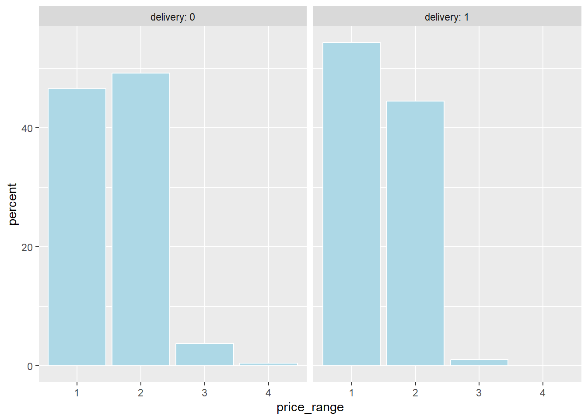
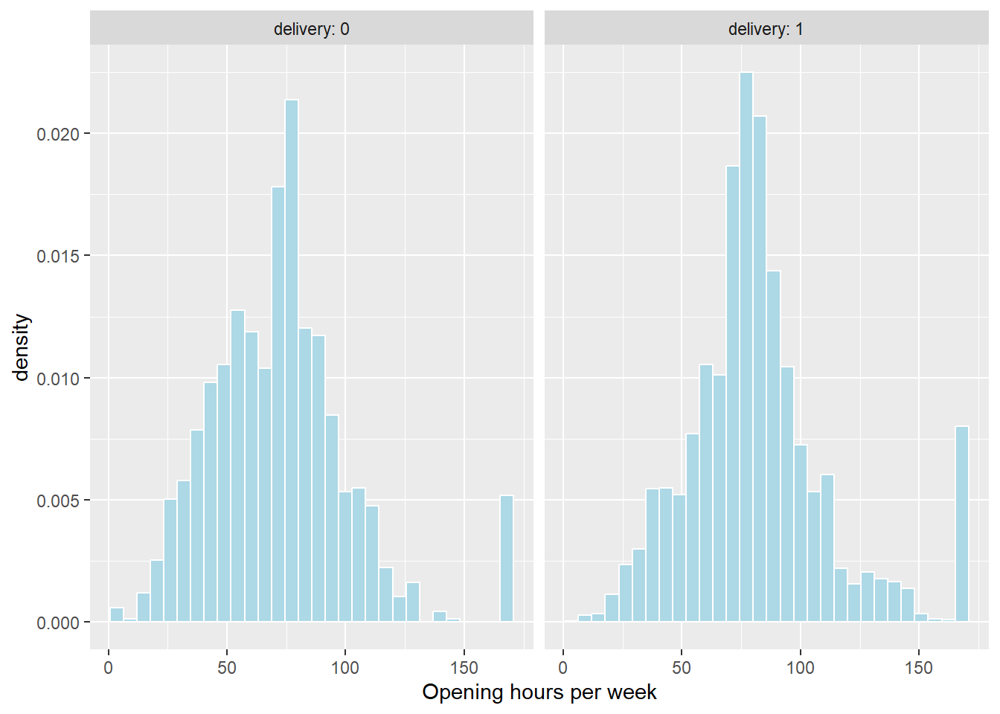
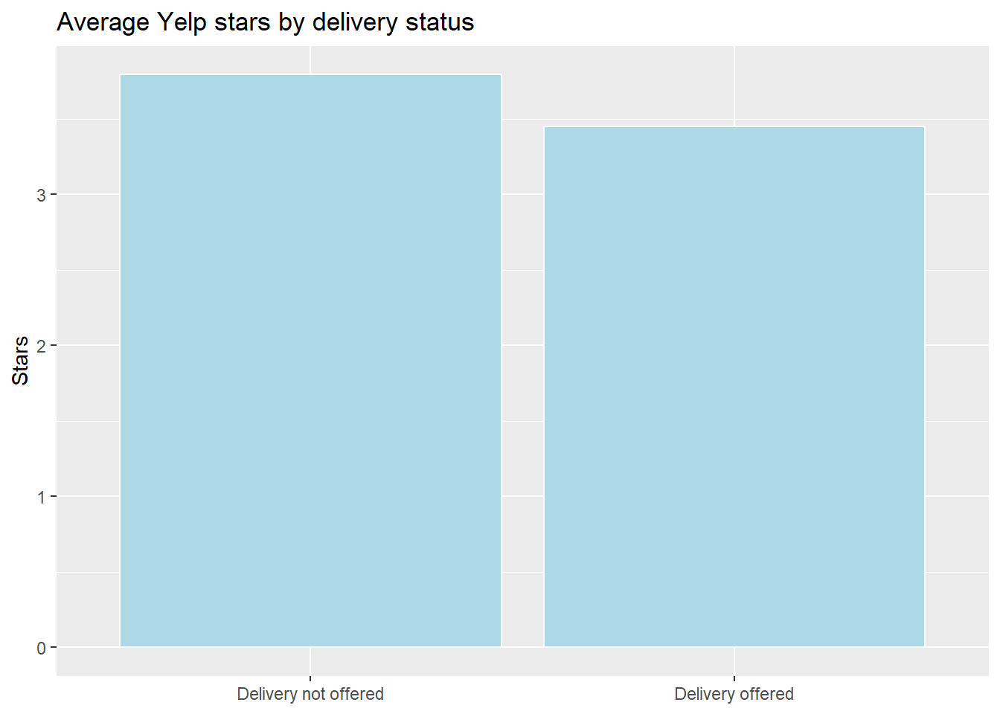
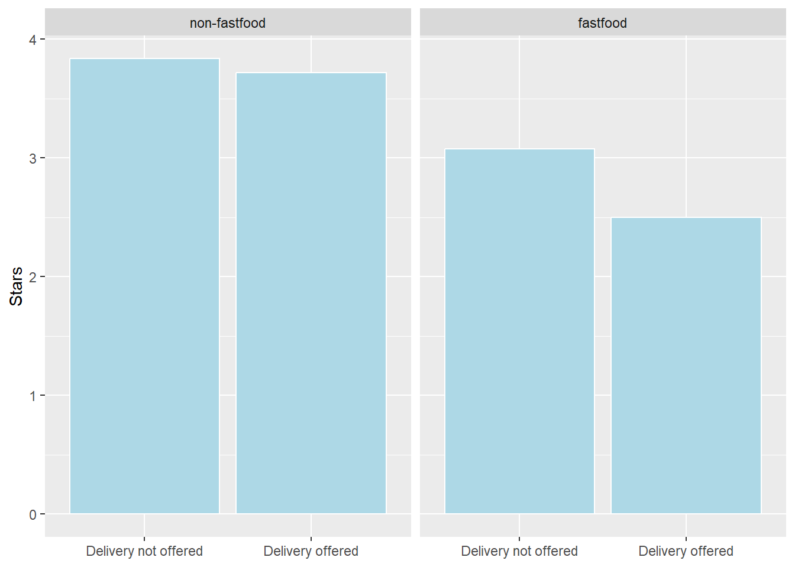
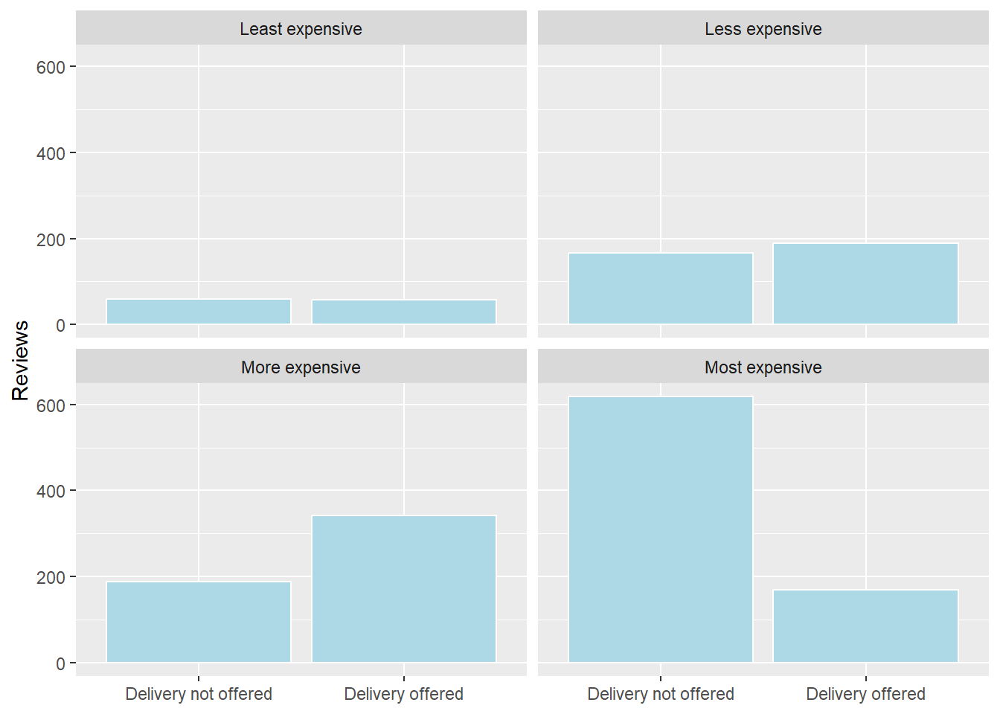

# Title: Econometrics Lab 4: Observational Studies in R
# Author: [INSERT NAME]
# Date: [INSERT DATE]
# ============================================================================ #
# Load libraries
library("haven")
library("dplyr")
library("ggplot2")
library("sandwich") # robust standard errors
library("lmtest") # coeftest(): regression output with robust SEs
library("broom") # used by the table helper functions
library("knitr") # used by the table helper functions
# Clear all objects from the R environment
rm(list = ls())
# Set working directory
setwd("[INSERT FILE PATH]/EC3301/Lab 4")
# ============================================================================ #
# Open data
yelp_dta <- read_dta("yelp_restaurants.dta")
# ============================================================================ #
# Table helper functions (copy from the box below)
# ============================================================================ #
# Sample selection
# ============================================================================ #
# Assignment
# ============================================================================ #
# Correlation
# ============================================================================ #
# ModelEconometrics Lab 4
Observational Studies in R
During this lab you will analyse data on restaurant reviews from Yelp, courtesy of the Yelp Open Dataset. You will be provided with a Stata .dta and .csv version of the data containing information on 52,268 restaurants. You can use either file type. The dataset is a snapshot of restaurants on Yelp taken during early 2022 and covers a select number of US states.
The goal of the lab is to examine whether offering delivery improves a restaurant’s reviews (using the dummy variable delivery). There will be two main outcome variables: stars (average number of stars across reviews) and review_count (number of reviews). The timing of the Yelp snapshot is quite important: in early 2022 many restaurants had closed down (33.06% in the data) and those who were still open were almost universally offering takeout (95.75% in the data, conditional on being open). However, not all restaurants were offering delivery: 72.95% conditional on being open.
Part 1: Analysis: In the first part of the lab you will conduct your own analysis of the data following some guiding questions. You may find it helpful to have access to your R script from Lab 3, as many of the steps will be similar.
Assignment: comparing the characteristics of restaurants that offer delivery with those that do not
Correlation: examine the unconditional relationship between outcome and treatment variables, as well as potential confounding factors
Model: establishing a model that estimates the average impact of offering delivery under specific assumptions.
Part 2: Mini Report: In the second part of the lab you will create a mini report of your results using a prepared template. This report will be rendered in R as a .html file containing both your code and results. This is an important step as you will need to create a report just like this for your project.
To complete part 2 you will need the following files available on Moodle: Lab 4 Resources (R)
- “ec3301-lab-4.Rmd” (for students running RStudio on AppsAnywhere)
- “ec3301-lab-4-alt.Rmd” (for students running RStudio on their own computer)
By completing parts 1 and 2, you will have developed the technical skills you need to complete the project.
Setup
On Moodle, under “Week 9”, you find the “Lab 4 Data (R)” folder.
Create a folder on OneDrive (or your H drive) for “Lab 4”
Download ALL the files, including the “yelp_restaurants.dta”, and store them in this folder. If you download a zipped (compressed) folder, ensure that you unzip the folder and move all contents to your working directory.
Open RStudio and create a new R script. Save it as “Lab 4/lab-4.R”
Add the following to your R script; editing the file path to match your folder structure.
- As in Lab 3, copy the table helper functions into your script, under the heading “Table helper functions”, and run them once. This version adds a
noteoption toreg_table(), which you will use in Part 2.
Table helper functions (click to show, then copy into your script)
# Variance matrix for a fitted lm, mirroring Stata's vce() options.
# "classical" = Stata default; "HC1" = vce(robust); "HC2" = vce(hc2)
get_vcov <- function(m, type = "classical") {
if (type == "classical") return(vcov(m))
vcovHC(m, type = type)
}
# Coefficient table with the chosen SEs
coef_table <- function(m, type = "classical") {
tidy(coeftest(m, vcov. = get_vcov(m, type), df = m$df.residual))
}
# Side-by-side regression table (replaces modelsummary).
# models: named list of lm objects
# types: one SE type per model (recycled if length 1)
# keep: terms to show (NULL = all except the intercept)
# note: optional table note
reg_table <- function(models, types = "classical", keep = NULL, note = NULL, digits = 4) {
types <- rep(types, length.out = length(models))
stars <- function(p) ifelse(p < .01, "***", ifelse(p < .05, "**", ifelse(p < .1, "*", "")))
tabs <- Map(coef_table, models, types)
terms <- if (is.null(keep)) {
unique(unlist(lapply(tabs, `[[`, "term")))
} else keep
terms <- terms[!grepl("Intercept", terms)]
rows <- lapply(terms, function(t) {
b <- sapply(tabs, function(x) { r <- x[x$term == t, ]
if (nrow(r)) paste0(formatC(r$estimate, digits, format = "f"), stars(r$p.value)) else "" })
se <- sapply(tabs, function(x) { r <- x[x$term == t, ]
if (nrow(r)) paste0("(", formatC(r$std.error, digits, format = "f"), ")") else "" })
rbind(c(t, b), c("", se))
})
out <- do.call(rbind, rows)
out <- rbind(out,
c("N", sapply(models, nobs)),
c("R2", sapply(models, function(m) formatC(summary(m)$r.squared, 3, format = "f"))),
c("SE", types))
colnames(out) <- c("", names(models))
print(kable(out, align = c("l", rep("c", length(models)))))
cat("* p<0.10, ** p<0.05, *** p<0.01. Standard errors in parentheses.\n")
if (!is.null(note)) cat(note, "\n")
}
# Balance table: means by group,
# difference, and p-value from an unequal-variance t-test (same as dtable).
balance_table <- function(data, vars, by = "treat", digits = 3) {
data <- data[!is.na(data[[by]]), ]
out <- t(sapply(vars, function(v) {
x <- data[[v]]; g <- data[[by]]
tt <- t.test(x ~ g, var.equal = FALSE)
c(Group0 = mean(x[g == 0], na.rm = TRUE),
Group1 = mean(x[g == 1], na.rm = TRUE),
Difference = mean(x[g == 1], na.rm = TRUE) - mean(x[g == 0], na.rm = TRUE),
p.value = tt$p.value,
N = sum(!is.na(x)))
}))
colnames(out)[1:2] <- paste0(by, " = ", 0:1)
print(kable(out, digits = digits))
}
TipUsing modelsummary and fixest (own computer only)
If you are working on your own computer and installed fixest and modelsummary in Lab 3, you can use them instead of the helper functions. Load them, and define the table settings, after rm(list = ls()):
library("fixest") # feols(): regressions with robust SEs
library("modelsummary") # modelsummary(): regression tables; datasummary_balance(): balance tables
stars <- c("*" = .1, "**" = .05, "***" = .01)
gof <- c("nobs", "r.squared")Look for similar boxes throughout the lab.
Part 1: Analysis
Sample selection
Remove all closed restaurants from the data. Hint: you can use
filter(), as in Lab 1.What type of variable is
state? How many states are represented in the dataset? Hint: useclass(), andlength()withunique().Pick one of states for which there is a reasonable sample. Remove all other observations from the data. Hint:
count(state)shows the number of restaurants in each state.
Assignment
Each restaurant decides whether it makes sense to offer delivery based on a range of criteria. For this reason, we cannot study this question as if delivery is the outcome of a randomized experiment. We must therefore start by establishing the characteristics of firms that determine selection into delivery.
What share of the restaurants in your sample offer delivery?
Of the categories of restaurants shown in the dataset (
cat_fastfoodtocat_bar) which category has the highest propensity to offer delivery? Here is an example of the code you could use:
yelp_dta %>%
filter(cat_fastfood == 1) %>%
summarise(mean_delivery = mean(delivery, na.rm = TRUE))
NoteHint: all categories at once
across() (see Lab 2) applies the same calculation to every column from cat_fastfood to cat_bar. Here delivery[.x == 1] keeps the values of delivery for restaurants in that category.
yelp_dta %>%
summarise(across(cat_fastfood:cat_bar, ~ mean(delivery[.x == 1], na.rm = TRUE)))- Create a balance table similar to the one in Lab 3 that shows the food-category characteristics of restaurants that do and don’t offer delivery. Use the option
by = "delivery"to compare across delivery status. Here is an example for Florida.
balance_table(yelp_dta,
c("cat_fastfood", "cat_pizza", "cat_burgers", "cat_sandwich", "cat_chinese", "cat_mexican",
"cat_italian", "cat_japanese", "cat_breakfast", "cat_cafe", "cat_bar", "n_categories"),
by = "delivery")
| | delivery = 0| delivery = 1| Difference| p.value| N|
|:-------------|------------:|------------:|----------:|-------:|----:|
|cat_fastfood | 0.055| 0.220| 0.165| 0.000| 5084|
|cat_pizza | 0.056| 0.151| 0.095| 0.000| 5084|
|cat_burgers | 0.070| 0.147| 0.077| 0.000| 5084|
|cat_sandwich | 0.135| 0.216| 0.081| 0.000| 5084|
|cat_chinese | 0.064| 0.060| -0.004| 0.621| 5084|
|cat_mexican | 0.082| 0.081| -0.001| 0.932| 5084|
|cat_italian | 0.046| 0.094| 0.048| 0.000| 5084|
|cat_japanese | 0.053| 0.051| -0.001| 0.838| 5084|
|cat_breakfast | 0.152| 0.138| -0.014| 0.209| 5084|
|cat_cafe | 0.111| 0.128| 0.018| 0.093| 5084|
|cat_bar | 0.292| 0.205| -0.087| 0.000| 5084|
|n_categories | 4.901| 4.987| 0.086| 0.254| 5084|
TipUsing modelsummary
datasummary_balance(~ delivery,
data = yelp_dta %>%
filter(!is.na(delivery)) %>%
select(delivery, cat_fastfood, cat_pizza, cat_burgers, cat_sandwich, cat_chinese, cat_mexican,
cat_italian, cat_japanese, cat_breakfast, cat_cafe, cat_bar, n_categories),
dinm_statistic = "p.value", fmt = 3)filter(!is.na(delivery)) drops restaurants with missing delivery status. Remember that the \(p\)-values come from an unequal-variance (Welch) \(t\)-test.
Does it appear as if the choice to offer delivery is balanced by food category? If not, where do you see the biggest differences?
Replicate the following graph which shows the distribution of
price_rangebydelivery.

NoteHint
First compute the share of restaurants in each price range, separately by delivery status. count() counts restaurants in each delivery \(\times\) price combination; group_by(delivery) then makes sum(n) the total within each delivery group.
price_shares <- yelp_dta %>%
filter(!is.na(price_range), !is.na(delivery)) %>%
count(delivery, price_range) %>%
group_by(delivery) %>%
mutate(percent = 100 * n / sum(n)) %>%
ungroup()Then plot percent with geom_col(), and use facet_wrap(~ delivery) to draw a separate panel for each delivery group. factor(price_range) treats the price range as categories on the \(x\)-axis.
- Replicate the following histogram of
weekly_hours(hours open per week) bydelivery. Hint:geom_histogram(aes(y = after_stat(density)))plots densities rather than counts.

Correlation
Next, you need to establish the unconditional correlation between delivery and the outcomes stars and review_count.
Compute the average
starsbydelivery. Recall from Lab 1, that we usedgroup_by()andsummarise().Plot the average stars by delivery. To replicate this figure (shown here for Florida), you will need a version of
deliverywith labels. Since we still need the 0/1 version ofdeliveryfor regressions, create a new labelled variable usingfactor():
yelp_dta <- yelp_dta %>%
mutate(delivery_lbl = factor(delivery, levels = c(0, 1),
labels = c("Delivery not offered", "Delivery offered")))
Use
t.test()(with unequal variance) to test whether there is a significant difference between the average stars. Recall from Lab 3 thatt.test()assumes unequal variances unless you addvar.equal = TRUE.Replicate Q1-Q3 for
review_count.The figure below shows the difference in mean stars by delivery status separately by
cat_fastfood(usingfacet_wrap()). Create a similar figure for your sample. Do both fastfood and non-fastfood restaurants show a difference in stars by delivery status?
yelp_dta <- yelp_dta %>%
mutate(cat_fastfood_lbl = factor(cat_fastfood, levels = c(0, 1),
labels = c("non-fastfood", "fastfood")))
means <- yelp_dta %>%
filter(!is.na(delivery_lbl)) %>%
group_by(cat_fastfood_lbl, delivery_lbl) %>%
summarise(mean_stars = mean(stars, na.rm = TRUE), .groups = "drop")
ggplot(means, aes(x = delivery_lbl, y = mean_stars)) +
geom_col(fill = "lightblue", color = "white") +
facet_wrap(~ cat_fastfood_lbl) +
labs(x = NULL, y = "Stars")
- The figure below shows the difference in mean
review_countby delivery status separately byprice_range. Create a similar figure for your sample. Are the differences consistent across price ranges?

Model
You now need estimate a model that controls for the characteristics of restaurants that are unbalanced across delivery status.
Which of the variables in the dataset could be “good controls”? Justify your choice.
Create a table of regression results for the outcome
starsshowing both the unconditional model alongside the conditional model(s). Estimate heteroskedastic-robust SEs (types = "HC1"inreg_table()). Usefactor()for categorical controls such asprice_rangeandnoise.
TipUsing fixest and modelsummary
As in Lab 3, estimate each model with feols(..., vcov = "hetero") and pass a list() of the models to modelsummary():
model1 <- feols(stars ~ delivery,
data = yelp_dta, vcov = "hetero")
model2 <- feols(stars ~ delivery + cat_cafe + cat_bar + cat_breakfast + cat_fastfood + n_categories + weekly_hours + chain,
data = yelp_dta, vcov = "hetero")
modelsummary(list("(1)" = model1, "(2)" = model2),
coef_map = "delivery", stars = stars, gof_map = gof, fmt = 4)What is the direction of the selection (omitted variable) ‘bias’ in the unconditional model?
Does the number of observations vary across each model? Why?
If the observations differ, you can use the following approach. Estimate the model with the largest set of controls, then create a variable that identifies this sample. Then estimate each model again (and compute the table), selecting on this sample.
model3 <- lm(stars ~ delivery + cat_cafe + cat_bar + cat_breakfast + cat_fastfood + n_categories + weekly_hours + chain + factor(price_range) + alcohol + factor(noise),
data = yelp_dta)
yelp_dta$sample <- as.numeric(!(1:nrow(yelp_dta) %in% na.action(model3)))
model1 <- lm(stars ~ delivery,
data = filter(yelp_dta, sample == 1))
# na.action(model3) lists the rows lm() dropped because of missing values;
# every other row was used to estimate model3
TipUsing fixest
obs() returns the rows used to estimate a feols() model:
model3 <- feols(stars ~ delivery + cat_cafe + cat_bar + cat_breakfast + cat_fastfood + n_categories + weekly_hours + chain + factor(price_range) + alcohol + factor(noise),
data = yelp_dta, vcov = "hetero")
yelp_dta$sample <- as.numeric(1:nrow(yelp_dta) %in% obs(model3))Create a similar table of regression results for the outcome
review_count.If you use the log of
review_count, does your conclusion differ?Perform a RESET test to check for missing nonlinear functions of your controls in the model. See Lecture-7 for the code on how to do this. What do you conclude from the test? If the null is rejected, try include some interactions of the control variables. You could also include interactions with the treatment variable
delivery(see Lecture-7 on unrestricted regression asdjustment for this).
Part 2: Mini Report
Part 2 of the lab requires you to combine code and answers from Part 1 into a mini report. This will be done using an R Markdown file (.Rmd): a document that combines plain text with R code, and that R runs (“knits”) into a report.
You have been provided with a template for the file. Use the version that matches your setup:
“ec3301-lab-4.Rmd” if you are using RStudio on AppsAnywhere
“ec3301-lab-4-alt.Rmd” if you are using RStudio on your own computer with
fixestandmodelsummaryinstalled
To open the template in RStudio, go to “File > Open File…”, navigate to your “Lab 4” folder, and select the .Rmd file.
R Markdown documents
A markdown file works in the opposite way to a programming script. In the R script, everything is assumed to be code unless commented out. In a markdown file, everything is assumed to be plain text unless it is placed inside a code chunk.
When you want to add code to the file, you place it inside a code chunk, which starts with ```{r} and ends with ```:
```{r}
summary(yelp_dta$stars)
```When you knit the file, the code chunks are executed in the order they appear. In addition, the code will be rendered together with the plain text into a single output file. As a result, the output file will display the code and resulting output alongside the text you include.
ImportantA fresh start
When you knit, R starts a new, empty session and runs only the code in the .Rmd file. It does not use objects you created in the console or in your R script. This is why the template opens the data and loads the libraries itself. It also means that the .Rmd file looks for “yelp_restaurants.dta” in the same folder as the .Rmd file, so you do not need setwd().
If you are using the AppsAnywhere template, the table helper functions are included (hidden) in the first chunk.
Execution
To execute (“knit”) the file, click the Knit button at the top of the editor window in RStudio.
Click Knit (or “Knit > Knit to HTML”). This is the fastest and will execute the file creating a .html document in your “Lab 4” folder. It also opens a preview of the document.
Next, you can knit the file as a MS Word document using “Knit > Knit to Word”. This will give you an opportunity to check the text for spelling/language mistakes. Unfortunately, any LaTeX notation math will not display very well in Word format.
Make any edits you need before knitting the file as a .html again.
To create a .pdf, open the Word document and save it as a PDF, or open the .html file in your web browser and print it to PDF.
NoteKnitting from code
The Knit button runs the render() function from the rmarkdown package. You can do the same from the console:
rmarkdown::render("ec3301-lab-4.Rmd") # html
rmarkdown::render("ec3301-lab-4.Rmd", output_format = "word_document") # Word“Knit to PDF” also exists, but it requires a LaTeX installation (e.g. the tinytex package), which is not available on AppsAnywhere.
Task
Your task is to edit the template you have been provided to include a selection of code from Part 1. The goal is to create a short mini-report on the analysis. Include a short discussion at the end summarizing your findings on the impact that delivery services has on restaurant ratings.
The file will need to re-open the dataset and include any sample selection decisions you made.
If you have time, consider carefully about the formatting of the graphs: titles, labels, colours, etc. Try to produce graphs that as clearly as possible communicate the relevant information.
Code chunks
There are other examples of code chunks in the template. You control what appears in the final document with chunk options, added inside the curly brackets after the r.
- Code chunks that execute quietly:
include = FALSE. These hide both the output and code from the final document.
```{r, include = FALSE}
```- Code chunks that hide output, but show code:
results = "hide".
```{r, results = "hide"}
```- Code chunks that hide code, but show output:
echo = FALSE.
```{r, echo = FALSE}
```- Code chunks that create graphs. Any graph created in a chunk is automatically included in the document. You can add a caption (
fig.cap), alternative text (fig.alt), and adjust the size (fig.height,fig.width, in inches).
```{r, fig.cap = "Distribution of price category, by delivery status", fig.height = 4}
ggplot(price_shares, aes(x = factor(price_range), y = percent)) +
geom_col() +
facet_wrap(~ delivery)
```Adjusting the caption and size of the image is optional. By default, the any image rendered in the block will be rendered. You may also prefer to use the figure title in place of a caption.
TipNumbers in the text
You can also place R results directly inside a sentence using inline code: `r ...`. For example,
`r round(mean(yelp_dta$delivery, na.rm = TRUE) * 100, 1)`% of restaurants offer delivery.will display the share of restaurants that offer delivery, computed when you knit. If the sample changes, the number in the text updates automatically. This is a sophisticated way of ensuring that your text matches is the output, but is can be quite cumbersome to use.
Markdown notation
The text in the markdown file can be formatted using standard markdown notation: a lightweight markup language. The Markdown notation guide and the Markdown Wiki Page provide a comprehensive list of features. Here are a few useful ones:
- Bold: to embolden text, wrap it in two *’s either side.
**Bold text**- Italics: to italicize text, wrap it in a single * either side.
*Italics text*- Make a number list as follows. Be sure to include a blank space before and after the first and last item.
1. Item 1
1.1. Sub-item 1
2. Item 2- Make a bullet point list by as follows. Be sure to include a blank space before and after the first and last item.
- Item 1
- Sub-item 1
- Item 2- Add inline Math using LaTeX notation, by wrapping it in a $ either side.
The OLS estimator for $\beta_j$- Add a display equation, by wrapping it in double $’s.
$$
y_i = x_i\beta + \epsilon_i
$$- Include headers, subheaders, and sub-subheaders
# Header
## Subheader
### Sub-subheader- Include a URL link
[Link](https://neil-lloyd.github.io/st-andrews-ec3301/)